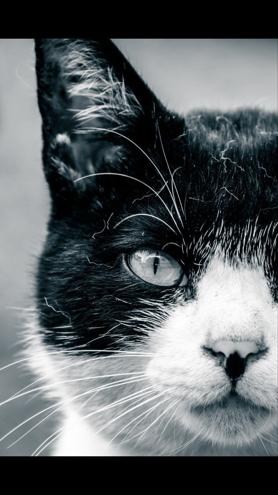

誰かが僕を見ている。
ある男は言った。
「抜け殻みたいになっちまったな」と。
ある女は嘆いた。
「全く魅力のないブルドッグのよう」と。
僕は言い返す。
「ブルドッグをバカにするな！ お前にやつの何が分かるんだ！」
「救えない人ね」
彼女はため息まじりにそう言って、その場から立ち去った。
街を歩いていても、太陽の光に目を瞑る。
なんて暑い日だ……。そう思いながら道を歩む。
そんな時、ある通りすがりの少女が
「あなたはなんで諦めたの？」
と尋ねてきた。
数秒目を合わせたが、やっぱり意味が分からず、
「早くおうちに帰りな」
とだけ言った。
そうしたら、今度は近くにいた老夫婦が口を揃えて、
「失望した」
コンビニの店員も出てきて、
「見損なったよ」
と続いた。
辺りを見回すと、どんどん人が寄ってきて、暴言を吐いた。
人の波に押しつぶされそうになったが、
「いい加減にしろ！ ただ道を歩いているだけだろ！」
そう叫んで、僕は走って街を抜け出した。
なんとか家に帰り、コップ1杯の水を飲み干した。
「どうなっているんだ、あの街は！」
やり場のない怒りがこみ上げる。顔でも洗って目を覚まそう。嫌な夢なら早く覚めてくれ。そう思い、洗面台に向かった。
そこにある鏡に本当の自分の姿を見た。
僕はその時、自分自身に負けていたことを悟ったのだった。